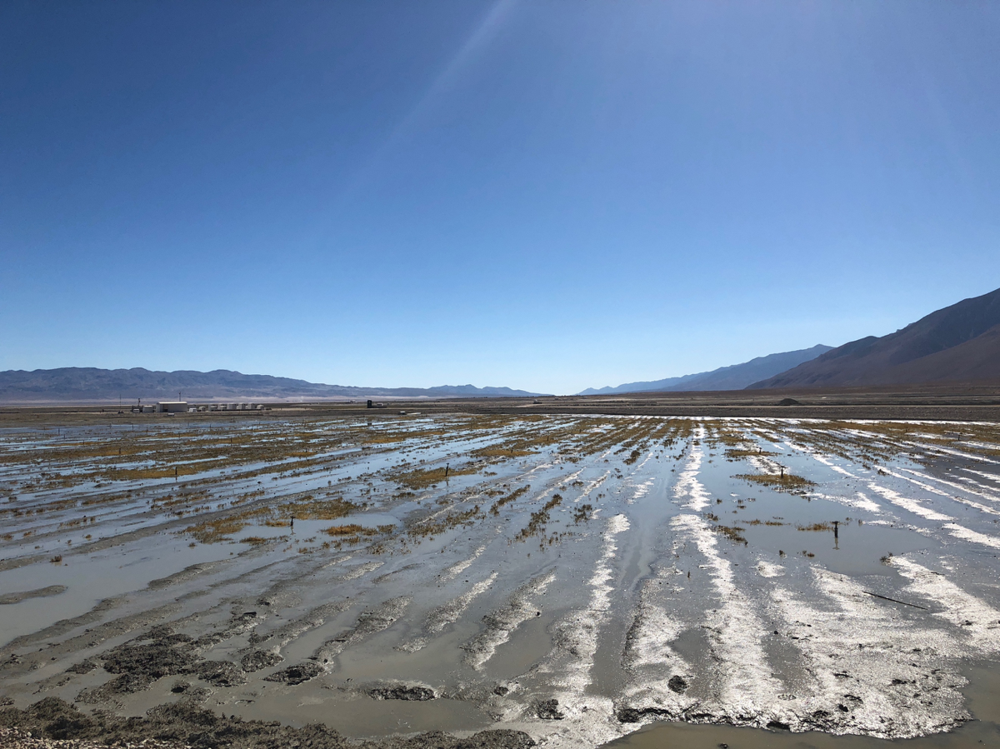

The Cadillac Desert / The Owens Valley Water Theft
The Early 1900s: Los Angeles was a small, semi-arid coastal town with grand ambitions but a fatal flaw: it lacked a sustainable water source. To the north sat the Owens Valley, a lush, self-sufficient agricultural paradise fed by the Owens River. In a covert State-Engineered strategy, the Los Angeles Department of Water and Power (led by William Mulholland) used agents disguised as ranchers to buy up land and water rights from unsuspecting farmers under the guise of starting a local irrigation project.

The tragedy unfolded as a slow-motion destruction of an entire ecosystem. In 1913, the Los Angeles Aqueduct was completed, effectively diverting the entire river toward the growing metropolis. By the 1920s, the once-fertile Owens Valley had been sucked dry. Owens Lake, which had been 12 miles long, vanished completely, leaving behind a toxic salt flat. The farmers, realizing they had been deceived, engaged in the "California Water Wars," using dynamite to blow up sections of the aqueduct in a desperate act of resistance. They were eventually crushed by state-backed private investigators and the sheer economic might of the city.
From Resource Theft to Environmental Dust Bowls: The immediate strategy of Los Angeles was Aggressive Urban Expansion. Without the stolen water, the city of millions simply could not exist today.
The Dust Mitigation Strategy: For decades, the dry bed of Owens Lake was the single largest source of carcinogenic PM10 dust pollution in the United States. Only after massive lawsuits did the city implement a strategy of "shallow flooding" and planting saltgrass to keep the toxic dust from blowing into neighboring communities.
Key Facts
Date: 1905–1913 (Initial acquisition and construction)
Location: Owens Valley and Los Angeles, California, USA
Casualties: Destruction of an entire regional ecosystem and agricultural economy; long-term respiratory health issues from toxic dust
Cause: Environmental Engineering Failure (Diversion of the Amu Darya and Syr Darya rivers for cotton irrigation)
The Legal Precedent: This event led to the "Public Trust Doctrine" being used in California law, a strategy designed to prevent cities from completely destroying one environment to fuel another. It forced a rethink of how water rights are managed in the American West.
The Infrastructure Goal: The "success" of this theft led to the strategy of the California State Water Project, a massive network of dams and canals that essentially treats the entire state’s water as a single, movable commodity, often at the expense of northern ecosystems.
The Owens Valley Water Theft is the definitive case study in Metropolitan Parasitism. It teaches us that the strategy of modern urban growth often requires the intentional "murder" of a distant rural landscape. It highlights the "intentional" tragedy of a government that uses deception and eminent domain to favor the many at the absolute cost of the few.